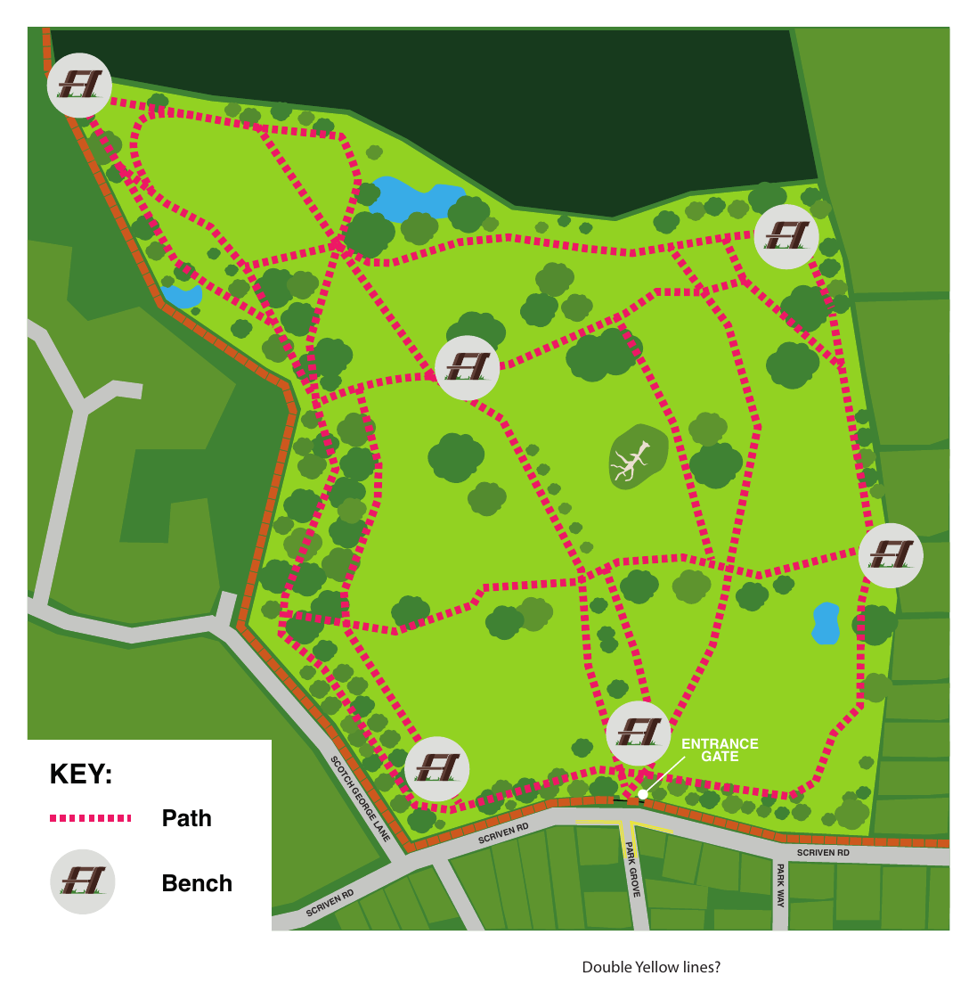
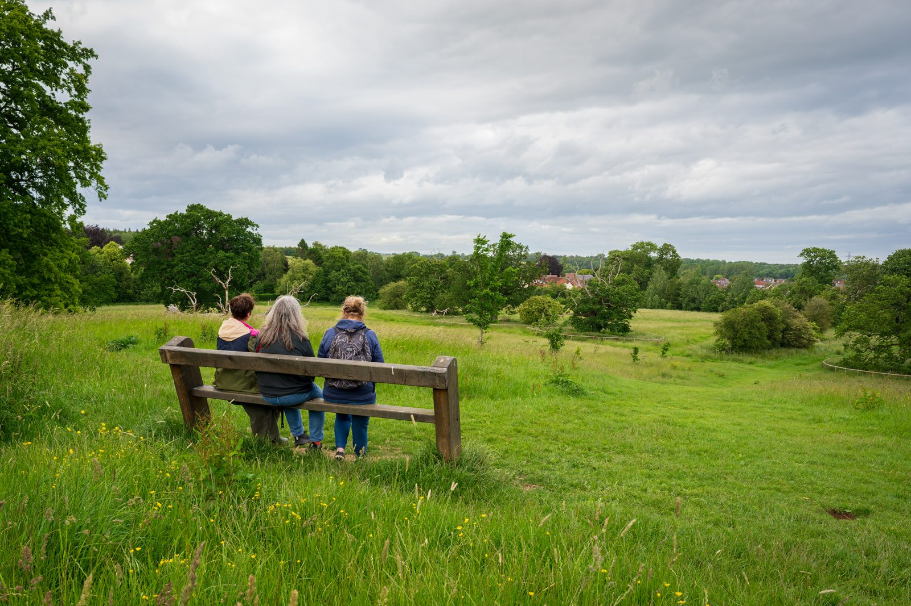
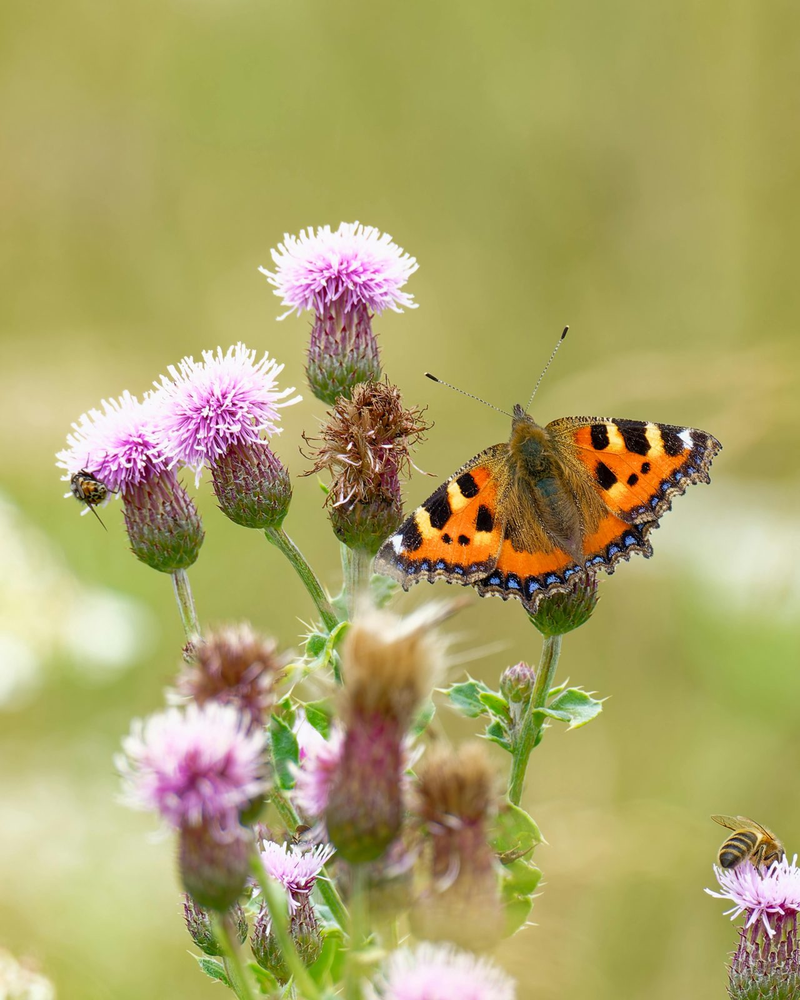
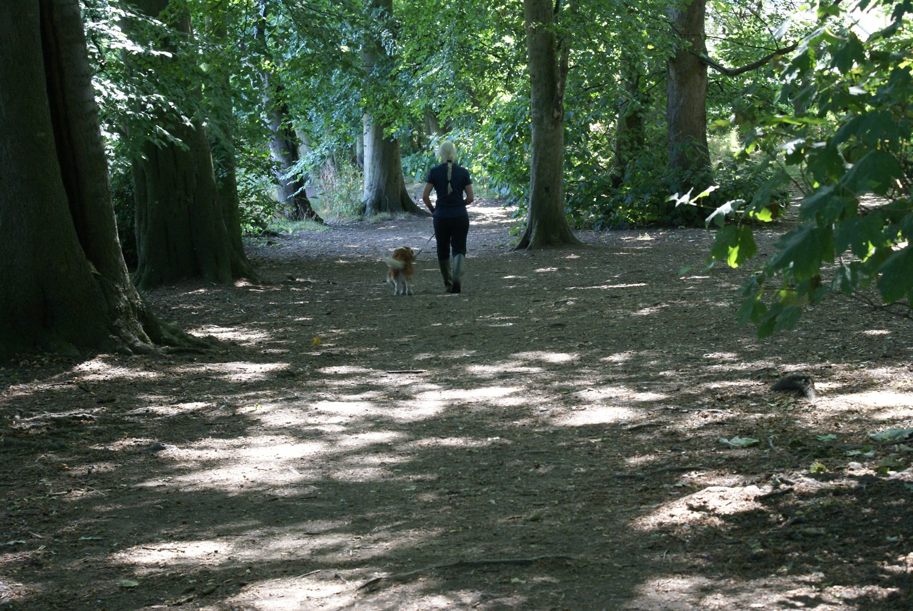

What to enjoy in Jacob Smith Park
JSP is a precious green space close to the centre of Knaresborough. It's a great spot for walking, getting closer to nature, enjoying the views, spending time with friends or just relaxing and watching the world go by.
Inside JSP
The park is a managed wild space with a network of paths criss-crossing its 30 acres and has a perimeter walk covering approximately three quarters of a mile. Some of the paths involve steeper climbs but these can be avoided by using other paths.
There are seven benches at various points around the park to rest or take in the beautiful views, which extend as far as the White Horse on the North York Moors. There is also a small recreational area near to the entrance for children to run around, play ball games and fly kites.
JSP has just one entrance. It is enclosed but there may be gaps in some perimeter fencing, so you should only let dogs off the lead if they are under control, in your sight and will come when called. Please ensure you clean up after your dog and dispose of waste in the bin near the park entrance.
Note: some paths, especially around the entrance, can be very muddy in winter or after heavy rain.

Paths and seating locations within Jacob Smith Park.

Find a bench, take a moment, and enjoy the far-reaching views — on a clear day you can see all the way to the White Horse on the North York Moors.
Wildlife
There is a range of habitats throughout the park, including woods, meadow and grasslands, wetlands and veteran trees. These habitats support a rich and diverse variety of wildlife.
Children are encouraged to explore the park with a guided nature trail; this has a beautifully illustrated guide with notes to help children discover an exciting new world.
You can download the guide at Jacob Smith Park nature trail.


Code of conduct
We want to ensure that everyone enjoys JSP while respecting each other and the park's natural environment. Click here for some guidelines we'd like you to follow when you visit JSP.
Barbecues, open fires, cycling and horses are prohibited by North Yorkshire Council.
Getting here
Location
Jacob Smith Park
Scriven Road
Scriven
Knaresborough
North Yorkshire
HG5 9EJ
///gears.dabbled.scribble
What3words is an easy way to identify precise locations — click the link to open the exact park entrance in the What3words app or website.
Parking
There is street parking in the surrounding area. Please park considerately and respect local residents.